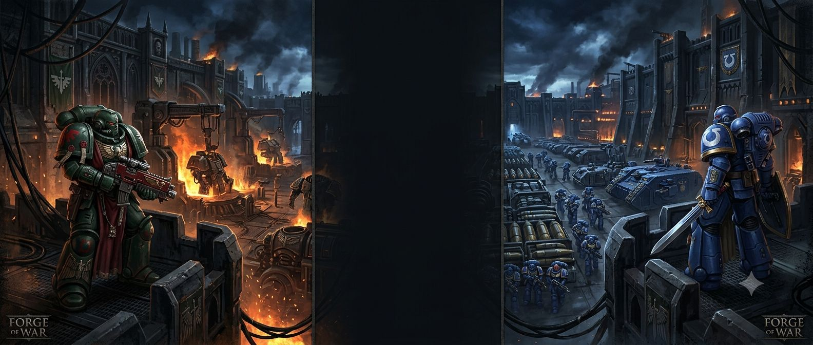
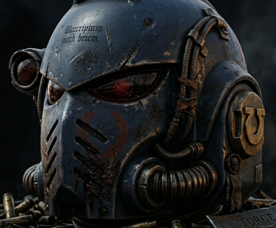
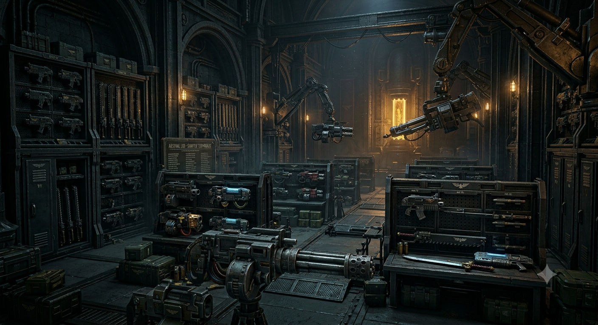
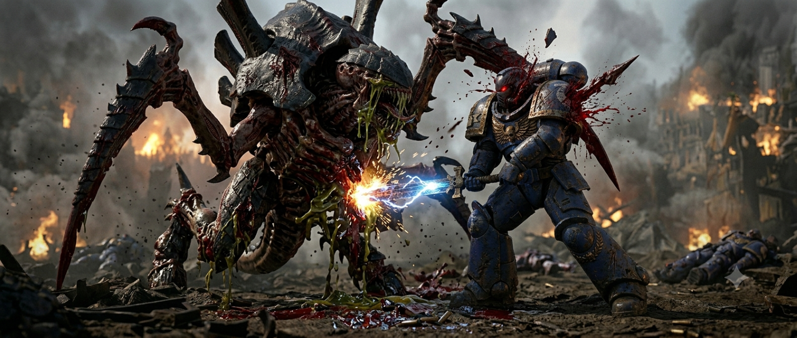

Freeman Foster
WDD 130
Overview
Purpose
My idea is a website that helps Warhammer players choose what units to use in their armies. Warhammer is a strategy tabletop game where players build armies from a large pool of units, each with different strengths, weaknesses, and costs. For new and experienced players alike, deciding which units work well together can be difficult and time-consuming. This website solves that problem by acting like a smart assistant: players select a unit they want to build around, and the site recommends complementary units based on synergy, battlefield roles, and army balance. It can also automatically generate complete army lists at the three standard competitive point levels, giving players ready-to-play options tailored to their chosen centerpiece. By simplifying planning and highlighting effective combinations, the website helps players spend less time researching and more time enjoying the game.
Audience
The main audence for this website would be people who are just getting into warhammer who may feel a little lost. The goal is to help them find a direction they can take their collection in without overwhelming them with all the options.
Branding
Website Logo
Style Guide
Color Pallette
| Primary Color | Secondary Color | Accent Color 1 | Accent Color 2 | Accent Color 3 |
|---|---|---|---|---|
Typography
Heading Font:
Paragraph Font:

Content
Welcome to the Forge of War!
Your ultimate tactical companion for building battle-ready Warhammer armies. Whether you are theory-crafting a brand-new detachment or optimizing a competitive list for your next tournament, we’ve got you covered. Choose your starting point below:

Strategy guide Command Your ForcesNeed to learn how to command your forces? Want to learn how to stage, screen, and heroicly intervene but have no idea what those words mean? This page is for you! Learn some basic strategies to bring your army from just looking good to playing good too!

Synergy Engine
Discover Perfect Unit Pairings
Unlock the full potential of your favorite units. Simply select a single unit, and our engine will analyze faction rules, leader buffs, and battlefield roles to recommend the best complementary units to back them up. Ideal for finding those hidden tactical advantages and maximizing your points efficiency.
Warhammer Strategy Guide

Commanding a tabletop army in Warhammer 40,000 can feel overwhelming at first. Winning isn't just about rolling hot dice or having the biggest guns—it is fundamentally a game of positioning, resource management, and controlling the pace of the match. This strategy guide covers foundational positioning mechanics and introduces advanced psychological concepts to help you take full control of the battlefield. ---
Core Positioning Concepts
Mastering movement is the single most important skill in Warhammer. Your models' final positions during the movement phase dictate how the rest of the turn—and your opponent's turn—will play out.
Screening
Screening is the act of using cheap, resilient, or expendable units (like chaff infantry) to block enemy movement and charges.
How it works:
Because enemy models cannot move through your models or end a normal move within 1" of them, a well-placed line of screen units physically walls off your valuable damage-dealers.The "Charge Buffer":
When screening against melee threats, position your screen roughly 3 to 4 inches *in front* of the asset you want to protect. If the enemy charges and destroys your screen, they are still left sitting out in the open, perfectly set up for your main unit to retaliate on your next turn.Deep strike/Resurves Screening:
When positioning your units, you don't just need to think about what models are on the battlefield. You and your opponent can have units start off the battlefield and arive later in the battle, using something called resurves. With resurves units, they can be placed on the battlefield anywhere at least 9 inches away from all opposing pieces. It is important to keep this in mind while positioning units, because otherwise you could quickly find a big problem in a very bad spot.Staging
Staging is the art of positioning your heavy-hitting units safely behind total line-of-sight blocking terrain (like ruins) so they can strike next turn without being shot off the board first. * **The Goal:** You want to be close enough to an objective or an enemy lane so that your next movement phase guarantees a short, successful charge or an optimal shooting angle. * **Patience Pays:** Never expose a lethal unit early just to get a mediocre shooting phase. Keep them staged and hidden until their exposure guarantees a high-value trade.
Movement Blocking (Move-Locking)
If your opponent has massive, fast-moving models or a horde that relies on a specific choke point, you can use your fast, cheap units to block them. By advancing a unit right up to the edge of their engagement zone (just outside of 1"), you force them to either waste a turn declaring a charge against a worthless unit or take an inefficient, winding detour around you.
---Advanced Tactical Concepts
Once you understand where to put your models, you need to master *why* and *when* to commit them.
Trading Up (The Resource Game)
You should rarely expect a unit to survive the entire game. Instead, view your army as a pool of resources meant to be spent efficiently. Trading Up: If you send a 90-point skirmishing unit into the mid-board to flip an objective, and your opponent is forced to expose a 250-point elite unit to destroy them, you have successfully "traded up." * On your following turn, your staged heavy hitters can wipe out their exposed elite unit. You spent 90 points to destroy 250.
Over-Committing vs. Staggering Threats
New players often make the mistake of pushing their entire army forward at once. This creates target overload for your opponent, but it also means your entire force is exposed to counter-attacks. Instead, **stagger your threats**. Send out waves. Force your opponent to deal with a single, problematic frontline unit while the rest of your army safely holds back, scoring points and preparing to counter-punch.
---Mastering the Mental Game: Avoiding Reactive Play
The biggest hurdle for intermediate players is falling into the trap of **Reactive Play**. Reactive play means you are letting your opponent dictate the game—you are simply running around trying to put out fires that *they* started. To win consistently, you must transition to **Proactive Play**. ``` [Reactive Play] --> You respond to your opponent's moves. (Defensive/Predictable) [Proactive Play] --> You force your opponent to respond to yours. (Dictating the Match) ```
How to Break the Cycle of Reactive Play:
Dictate the Engagement:
Don't shoot a unit just because it's right in front of you. Ask yourself: *"Does destroying this unit help me score primary/secondary points, or does it just bail my opponent out of a bad positioning mistake?"* Focus on the mission, not just matching your opponent's aggression.
Create Dilemmas, Not Choices:
A "choice" is easy for an opponent—if you give them a target-rich environment, they will just pick the optimal one. A **dilemma** forces them to choose between two bad options. For example: *If they turn to deal with your flanking unit, they lose the center objective. If they stay in the center, your flanking unit scores max secondary points.*
Plan a Turn Ahead:
During your deployment and movement phases, do not just look at what you can kill *right now*. Look at where your models will be standing when your turn ends. Ask yourself: *"What can my opponent realistically do to me next turn from where they are currently sitting?"* If the answer is "they can easily wipe me out," rethink your positioning.
Unit roles and synergies
Ranged Support & Firepower
Role These units form the anvil of your army. They sit in your backfield or take up strong firing lanes to soften up heavy targets, clear screens, and control no-man's-land from afar. Their primary job is to delete threats before they can reach your lines.Key Examples
Centurion Devastator Squad: Extremely heavy infantry armed with lascannons, missile launchers, or grav-cannons. They excel at erasing enemy armor and high-toughness targets from long range. Repulsor Executioner: A massive main battle tank providing high-strength, high-damage antitank or anti-infantry fire. Gladiator Lancer: One of the most efficient anti-tank platforms available, featuring built-in re-rolls for reliability. Eradicator Squad: Mid-range anti-monster and anti-vehicle specialists that can re-roll hits, wounds, and damage against their preferred targets. Hellblaster Squad: High-volume plasma fire capable of melting heavy infantry and light vehicles, with the ability to shoot on death.Optimal Pairings & Synergies
Apothecary Biologis: Can be attached to Eradicators (ideally with the Fire Discipline enhancement in the Gladius Task Force) to grant Lethal Hits, causing critical hits to automatically wound. Techmarine: Grants a +1 to hit modifier to vehicles (like the Gladiator or Executioner) and heals lost wounds. Land Raider: Centurions have the Infrantry keyword but take up 3 transport slots each. A standard Land Raider can transport a 3-man squad safely into an optimal firing position. Additionally, all land raiders come with several heavy weapons of their own, allowing them to support your army with both mobility and firepower.How to Support
Long ranged units benifit greatly from having threatening melee comrades to hold back the enemy line. With melee support locking down enemy lines and bringing down powerful threats, your gunline can focus on more distant threats, or picking up stragglers that you don't want to commit your frontline to deal with.Large shooting units also benefit greatly from smaller units to preform actions and focus on scoring points while they hold the line. Preforming actions stops a unit from shooting or charging in the same turn, effectivly turning them into little more than bricks for the turn. Additionally, points do not effect the effecincy of actions, so it is far better to preform an action with a 70 point scout squad than a 360 point centurion squad.